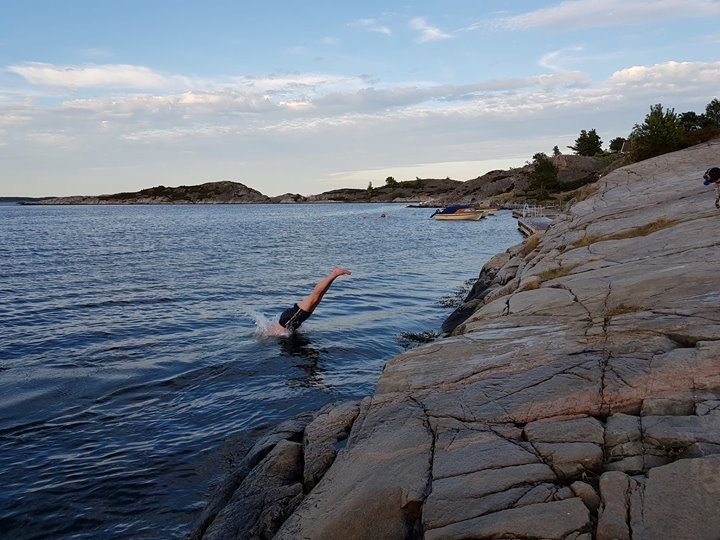

More About the Vacation House
The holiday home is built at Nodeberget in Skålvik on idyllic Flekkerøya just outside Kristiansand. The modern building, built in 2023, is located on a hill with panoramic sea views and boat connections to Kristiansand. There is a road leading to the cabin, with 2 parking spaces and a boat berth. It is a short distance to shop, and 20 min. drive to Kristiansand city center.

1.Floor
- Large open living room with smart TV, gas fireplace, large open kitchen and access to terrace with a stunning view
- A large bedroom with double bed
- Bathroom with toilet & shower
There are also 3 storage rooms:
- Storage room for laundry and refrigerator
- Technical booth
- Wine room (not available to guests)

2.floor
- Living room with gas fireplace and access to terrace with stunning view
- Two large bedrooms with double beds
- Large bathroom with toilet and shower
- Large, airy guest area / bedroom with one-suite bathroom / shower / bathtub
- Walk-in closed (not available to guests)

Outdoors
There are beautiful outdoor areas around the entire cabin – with beautiful and unsheltered views of the sea. In the outdoor areas there are two outdoor stalls. Outdoor storage room facing the parking lot is used for storage of gas fireplace for barbecues outside and outdoor chairs / pillowcases. The outdoor shed facing the sea is used for fishing equipment and garden tools. The fishing equipment can be used if desired. The plot borders a beautiful public seaside resort. This can be used together with other residents and cabin guests. There are great swimming opportunities with deep water right by the rocks. REMEMBER to bring in mats, pillows and mattresses every night after use due to rain or wind.
Bathing Options
As mentioned above, there is a great bathing place 20 meters from the cottage. With its beautiful rocks, the bathing area is the perfect place to enjoy hot summer days and take a refreshing bath.
BOATING AND FISHING OPPORTUNITIES
Try your luck fishing! There are a lot of fish around Flekkerøya, especially it is easy to catch Mackerel, Cod, Saithe and Lyr. It can be fished both from land or boat. Complete fishing equipment can be found in the holiday home.
The holiday home has its own berth, and this can be used. Please contact us if this is desired. Boat is not available. When renting an external boat: This must be under 20 feet to fit in the berth. The drawing below shows the various berths on the pier, and the holiday home has boat space no. 1. Other external boats and kayaks must not be used/ touched, as these are owned by other cabins.


OUTDOOR AREAS
There are beautiful outdoor areas around the holiday home, with a unique view to the sea. There is access to good, sunny seating, with pergola and gas fireplace for barbecues outside, lovely terraces and lawn. There are also two outdoor stalls connected to the holiday home.


Parking Lots
The holiday home has 2 parking spaces in a private car park close by. Park as close to the stairs to your holiday home as possible.